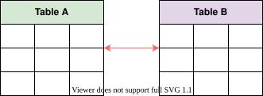

25. Concluding the Building Blocks Discussion
Wrapping Up the Building Blocks Discussion
Wrapping Up the Building Blocks Discussion
Get an overview of what we have learned and what is yet to be discussed.
We'll cover the following
We have covered a good number of building blocks that will enable us to solve bigger design problems. In the coming chapters, we’ll solve a variety of problems that will use various building blocks.
Since we’ve already covered the building blocks, we can focus on solving bigger design problems. From this point onwards, we’ll assume that you’re well acquainted with all the discussed building blocks when we use them in our coming design problems.
What’s next?#
We’ll learn and explore thirteen design problems in the next chapters. We’ll study the following system designs:
Each of these designs is an independent chapter, but we recommend that you go through these chapters in the assigned order. Some problems have background material that is helpful in other design problems. For example, working through the Google Maps problem first can be useful for readers interested in learning about the Uber design problem.
At the end of the course, we’ll conclude our course with the “Spectacular Failures” chapter, where we’ll discuss how a minor bug or mistake led to a significant outage or failure of some of the most successful systems designed.
The RESHADED Approach for System Design
The RESHADED Approach for System Design
Let's use our RESHADED approach to break down a design problem.
We'll cover the following
Introduction#
System design problems are not straightforward. We don’t have a universal formula that we can use for all design problems. However, we can use a high-level common strategy to set the tone for a good solution to any design problem. We call this the RESHADED approach. Generally, all our design problems are solved by keeping this strategy in mind. RESHADED is a guideline that we’ll use to resolve different design problems. Although there’s no such thing as a one-size-fits-all solution, using this approach will have its advantages, as we will see.
Advantages of RESHADED#
Before we go through each word in RESHADED, let's cover the benefits of our overall approach. Some of the key advantages of this approach are below:
- The RESHADED approach helps us remember some key steps for the resolution of every design problem. This means that, at any point in time, there will always be a next step laid out ahead of us.
- The solution we come up with will have all the basic ingredients required to solve any design problem. Not only that, but the solution offered through the RESHADED approach will be systematic and thoughtful.
Exploring RESHADED#
Below, we describe what steps we take under each word in RESHADED:
Requirements: During this step, we gather all the requirements of the design problem and define its scope. Requirements include understanding what the service is, how it works, and what its main features are. Our goal in this step is to gather the functional and non-functional requirements of a service we are about to design.
Estimation: As the name suggests, this step estimates the resources required to provide the service to a defined number of users. By resources, we mean the hardware or infrastructural resources. Some sample estimation questions are the following:
- How many servers will we require to provide smooth services to 500 million daily active users (DAU)?
- How much storage do we need if we have to store 125 million tweets per day, and 20% of tweets contain media?
Estimations are important because they help us understand the scale of the system we’ll design. We’ll make key decisions based on the estimate. For example, we’ll decide what type of database to use for storing our data, which data structure will give optimal performance, and so on.
Storage schema (optional): This step involves articulating our data model—that is, we define which tables we need and what type of fields are part of each table. However, this is an optional step, and we may not exercise this effort in every design problem.

High-level design: This step involves identifying the main components and building blocks we’ll use to design our desired system. We do this by getting inspiration from our functional and non-functional requirements.
This is considered the first step toward the complete design of our system and therefore requires further iteration and improvement. Primarily, this section will focus on fulfilling the functional requirements.
API design: The goal in this phase is to build interfaces for our service. Using these interfaces, users can call various services within our system. These interfaces are in the form of API calls and are generally a translation of our functional requirements.
Detailed design: The detailed design starts by recognizing the limitations of the high-level design. We’ll capitalize on these limitations to evolve our design. During this step, we’ll finalize our design by mentioning all the components and building blocks that we’ll use.
We also define the workflow of our design and its usage of different technologies. The detailed design aims to fulfill the functional as well as non-functional requirements of the problem.
Evaluation: This step will measure the effectiveness of our solution. In other words, we justify how our design fulfills the functional and non-functional requirements.
We discuss different trade-offs we made in our solution and also identify room for improvement.
Distinctive component/feature: At the start of this lesson, we discussed how no one-size-fits-all solution exists. This step is to identify a unique aspect for each design problem and discuss it. For example, the Uber design problem has payment service and fraud detection as its unique feature. In contrast, Google Docs has concurrency control, which is required when different users want to edit the same section of a document simultaneously.
Next, we’ll apply our guideline (RESHADED) to many design problems.